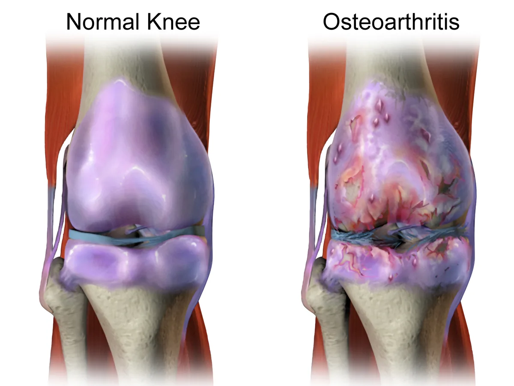
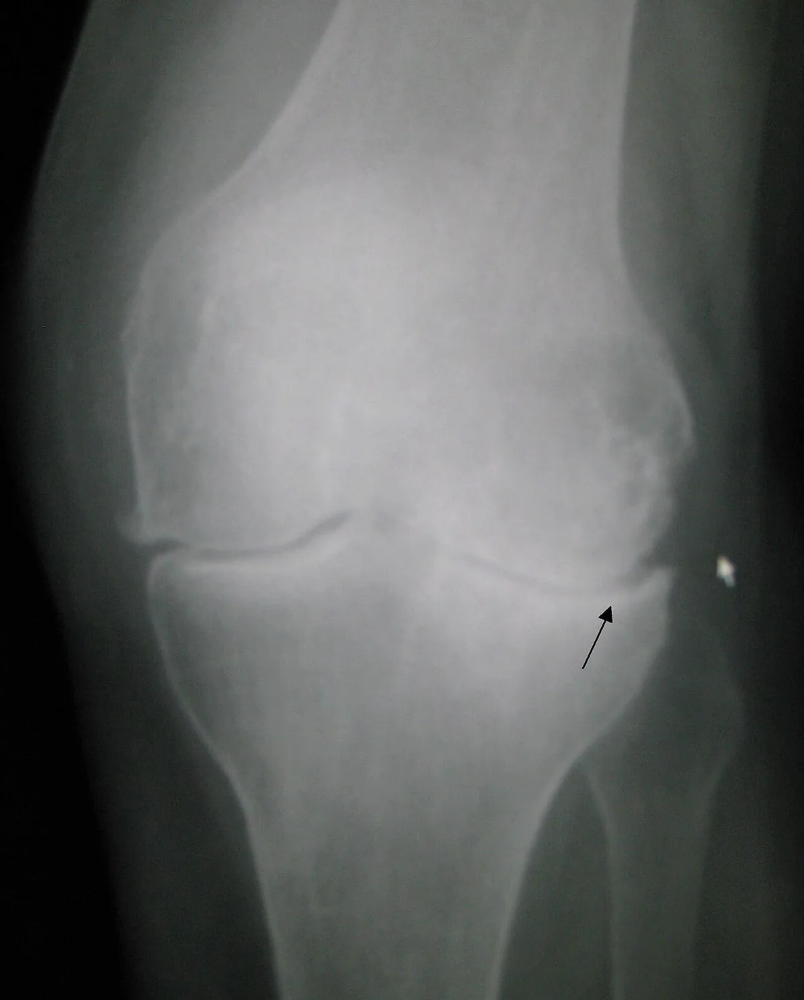
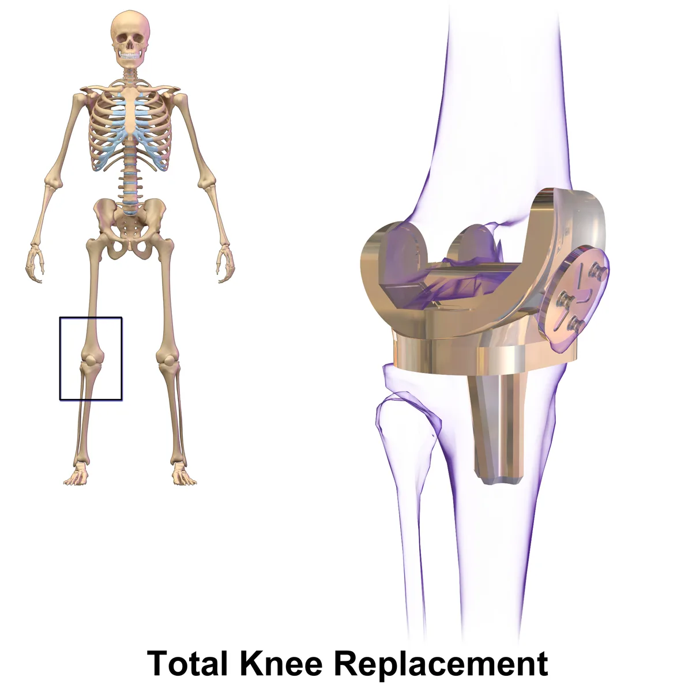
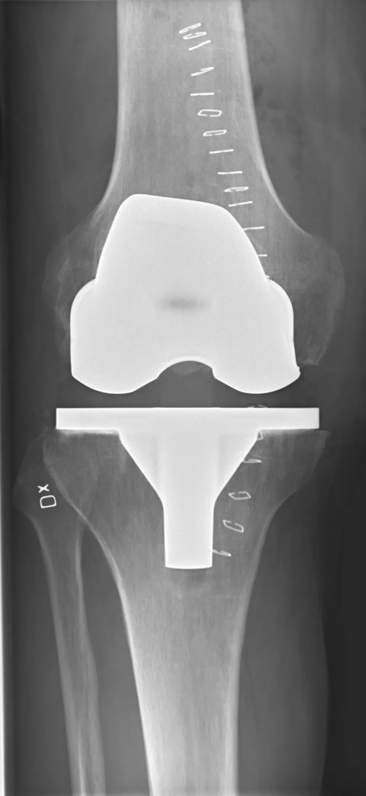

Сначала посмотрите видео
Как готовиться к плановой операции, смотрите в видео «Подготовка к плановой операции».
Главное за 30 секунд
- Выполняйте назначенные упражнения и соблюдайте указания по нагрузке на ногу.
- Боль и отёк икры, покраснение раны, температура: к врачу в тот же день.
- Внезапная одышка или боль в груди: сразу скорая помощь 101.
Что это за операция
Изношенные суставные поверхности бедренной и большеберцовой костей в колене заменяют металлическими частями, а между ними ставят пластиковый вкладыш. Иногда заменяют и поверхность надколенника.
- Чаще всего операцию делают при тяжёлом артрозе, когда боль и ограничение движений не проходят от лечения без операции.
- Вставать и ходить с ходунками обычно начинают рано, под контролем физиотерапевта. Когда именно — решает команда отделения.




Поступление
Поступление в отделение
- В день поступления медсестра проведёт беседу при приёме: спросит о здоровье, лекарствах и аллергиях, измерит давление, пульс, температуру и сатурацию, при необходимости — рост и вес.
- Вас оформят, наденут идентификационный браслет и покажут палату: кнопку вызова медсестры, туалет, душ и место с питьевой водой.
- Врач объяснит план операции, а анестезиолог — план анестезии. Вас попросят дать информированное согласие на операцию и анестезию. Встреча с анестезиологом может проходить позже, но до операции.

Подготовка
Подготовка
- Душ: вечером накануне операции вымойте тело и волосы. Утром повторите душ, если это указано отделением. Используйте мыло или антисептическое средство согласно инструкции отделения. Если есть аллергия на мыло или антисептики — сообщите персоналу.
- Не брейте ногу в области операции сами.
- Сообщите заранее, если у вас появились температура, новый кашель, жжение при мочеиспускании, инфекция зуба или дёсен либо любая рана, ссадина или кожная инфекция на ноге, которую будут оперировать.
- Возьмите удобную закрытую обувь с задником.
Лекарства перед операцией
Это общие правила. Точные указания даст ваш врач — следуйте им.
- Принесите список всех лекарств, которые принимаете.
- Препараты, разжижающие кровь (антикоагулянты и антиагреганты): останавливать — только по указанию врача. Аспирин не отменяйте сами.
- Если вы принимаете такие препараты, как Jardiance (эмпаглифлозин), Forxiga (дапаглифлозин) или комбинированные таблетки, например Jardiance Duo или Xigduo, сообщите врачу до операции, даже если у вас нет диабета. Эмпаглифлозин и дапаглифлозин относятся к группе ингибиторов SGLT2. Некоторые лекарства этой группы применяют также при сердечной недостаточности и хронической болезни почек. Комбинированные таблетки могут содержать дополнительные действующие вещества, например метформин. Перед операцией сообщите врачу полное название всех принимаемых лекарств и покажите упаковки или список препаратов. Перед плановой операцией эмпаглифлозин и дапаглифлозин обычно отменяют как минимум за 3 дня, а эртуглифлозин — как минимум за 4 дня. Это нужно для снижения риска кетоацидоза, который возможен даже без выраженного повышения сахара крови. Точный план отмены и возобновления лечения определяет врач. Не меняйте лечение самостоятельно.
- Инсулин и другие препараты от диабета: заранее получите указания врача, какие лекарства принимать и в каких дозах. При диабете первого типа базальный инсулин обычно продолжают с коррекцией дозы по назначению врача. Самостоятельно прекращать его введение нельзя.
- Если вы делаете уколы Оземпик или Мунджаро — обязательно скажите врачу и анестезиологу.
- Голодание: обычно лёгкую еду необходимо закончить не менее чем за 6 часов до начала анестезии, жирную или тяжёлую — не менее чем за 8 часов. Прозрачные жидкости, например воду, обычно можно пить до 2 часов до анестезии. При некоторых заболеваниях, включая диабет и замедленное опорожнение желудка, правила могут отличаться. Следуйте точным указаниям отделения.
Операция
День операции
- Соблюдайте полученные указания о голодании, питье и приёме лекарств. Примите душ с тем средством, которое указало отделение, и в назначенное время.
- Перед отправлением в операционный блок наденьте больничную рубашку. Снимите украшения и часы. Контактные линзы, съёмные зубные протезы и слуховые аппараты снимайте по указанию персонала: некоторые из них можно оставить до встречи с анестезиологом. Идентификационный браслет не снимайте.
- Когда операционная команда будет готова, персонал отвезёт вас в операционный блок на кровати или каталке. Медсестра передаст необходимую информацию принимающей команде.
- Перед операцией у вас ещё раз уточнят имя, вид операции, сторону или место вмешательства, а также сведения об аллергиях. Повторные вопросы — обычная часть проверки безопасности.
- Близкие могут уточнить у персонала, где им разрешено ожидать. Во многих больницах есть зона ожидания для родственников, а в некоторых — экран с этапами операции по номеру пациента: «в операционной», «в палате пробуждения», «переведён в отделение». Уточните, какая система используется здесь.
- После операции вы обычно некоторое время будете находиться в палате пробуждения под наблюдением. Когда ваше состояние позволит, вас переведут в отделение. Иногда требуется дополнительное наблюдение или лечение в другом подразделении. Продолжительность зависит от операции, анестезии и вашего состояния.
После операции
Дренаж после операции
Дренаж — тонкая трубка из раны, по которой кровь и жидкость оттекают в закрытый пакет или ёмкость.
- После первичной замены коленного сустава дренаж обычно не требуется. Американская академия хирургов-ортопедов (2022) рекомендует не использовать его рутинно, поскольку не установлено значимого улучшения результатов операции или снижения частоты осложнений. В отдельных случаях необходимость дренажа определяет травматолог-ортопед.
- Если дренаж установлен, в ёмкости может появляться кровянистая жидкость. Со временем её количество часто уменьшается, а цвет может становиться светлее. О резких изменениях необходимо сообщать персоналу.
- Когда удаляют: зависит от вида дренажа, количества отделяемого и решения травматолога-ортопеда. Удаляет медсестра или врач.
- Берегите трубку: не тяните и не перегибайте её. Закрепляйте ёмкость так, как показал персонал. Не пытайтесь самостоятельно вставлять или повторно соединять трубку.
- Сразу сообщите медсестре, если: трубка выпала или отсоединилась; ёмкость быстро наполняется ярко-красной кровью; отток внезапно прекратился, хотя до этого жидкость поступала в ёмкость; подтекает вокруг трубки; усилились боль или отёк; появились температура, слабость или головокружение.
Первые часы после операции: как помочь и не помешать
- Особое время. Первые часы и первые сутки после операции — время, когда за человеком наблюдают особенно внимательно. Чаще всего всё идёт спокойно, но иногда помощь нужна очень быстро. Поэтому проход к пациенту и медицинскому оборудованию всегда должен оставаться свободным.
- Медсестра проверяет. После возвращения в отделение медсестра регулярно проверяет давление, пульс, частоту дыхания, насыщение крови кислородом, температуру и уровень сознания, а также осматривает область операции. В нашем отделении обычно так: сразу при поступлении из операционной, затем через час, ещё через час, затем через два часа, а дальше каждые четыре часа в течение первых суток. При необходимости проверки делают чаще. Это плановое наблюдение и не обязательно означает, что что-то не так. Если назначен эноксапарин (Клексан), после некоторых ортопедических операций в нашем отделении первый послеоперационный укол обычно делают примерно через двенадцать часов. Время определяет врач с учётом остановки кровотечения, вида операции и спинальной или эпидуральной анестезии.
- Свободный проход. Пожалуйста, оставляйте свободный проход к кровати со всех сторон. Не ставьте стулья и сумки вплотную к кровати и в проходе. Медсестра и врач должны быстро подойти к пациенту, а тележка — подъехать с лекарствами и оборудованием.
- Меньше людей — лучше. Лучше, если одновременно рядом с пациентом будет не больше одного-двух близких, если это допускают правила отделения. Когда персонал подходит к пациенту, пожалуйста, освободите место. Если вас попросили выйти из палаты, выполните просьбу. Позже можно уточнить причину и задать вопросы.
- Только с разрешения. После наркоза бывают тошнота и рвота, а ослабленный человек может поперхнуться. После операции не давайте пациенту еду и питьё без разрешения медсестры. Когда пациент достаточно проснулся, может безопасно глотать и нет других ограничений, ему могут разрешить пить и есть. Иногда начинают с небольшого количества воды, затем переходят к еде. Когда и что можно, решает медицинская команда.
- Борта и кнопка. Борта кровати поднимают по решению персонала, с учётом состояния пациента. Они подходят не всем и не заменяют помощь при вставании. Не поднимайте и не опускайте борта самостоятельно. Кнопка вызова должна быть под рукой. Вставайте только с разрешения медицинской команды, первый раз — с помощью персонала.
- Если что-то не так. Если пациента тошнит, ему трудно дышать, он стал необычно сонливым, его трудно разбудить, появилась внезапная спутанность сознания или сильное беспокойство, боль резко усилилась либо повязка быстро пропитывается кровью — немедленно позовите медсестру. Нажмите кнопку вызова, а при тяжёлом состоянии громко зовите персонал. Не давайте самостоятельно еду, питьё или лекарства и не пытайтесь поднимать пациента.
Первые дни после замены сустава: частые вопросы
- Что обычно чувствуют в первые дни
Боль, отёк, синяки и умеренное ощущение тепла вокруг оперированного сустава часто встречаются после операции. Отёк и синяки могут распространяться на голень и стопу и сохраняться несколько недель. Возле шва возможно онемение кожи. Также бывают слабость, нарушения сна и запор. Небольшое повышение температуры иногда возникает без инфекции, но о нём нужно сообщать медсестре. Немедленно сообщите персоналу о нарастающей боли, выраженном покраснении, необычном отёке или боли в голени. При внезапной одышке или боли в груди срочно зовите персонал. - Зачем нужно обезболивание
После операции обезболивающие назначают по индивидуальной схеме. Одни лекарства принимают регулярно, другие по необходимости. Хороший контроль боли помогает безопасно вставать, ходить и выполнять упражнения. Сообщайте медсестре о боли, не дожидаясь, пока она станет сильной, особенно перед физиотерапией. Оценивайте боль по шкале от 0 до 10. Принимайте лекарства по назначению. Если они плохо помогают, вызывают побочные действия или вы не хотите их принимать, обсудите это с персоналом. Не изменяйте схему самостоятельно. - Что такое блокада нерва
Для уменьшения боли анестезиолог иногда выполняет блокаду нерва. Местный анестетик вводят рядом с определённым нервом или группой нервов, нередко под контролем ультразвука. Это временно уменьшает передачу болевых сигналов. Блокаду применяют не всем пациентам. Решение о её необходимости и способе выполнения принимает анестезиолог. - Почему нога может быть онемевшей
После спинальной анестезии или блокады нерва нога может временно ощущаться тяжёлой, слабой или онемевшей. Длительность зависит от применённого препарата и метода анестезии. После некоторых блокад эффект сохраняется до 48 часов. Пока чувствительность или сила снижены, не вставайте без помощи персонала. Не используйте грелку и не прикладывайте холод самостоятельно. По мере окончания блокады боль может усиливаться, поэтому попросите обезболивание заранее, согласно назначениям. Если слабость или онемение усиливаются либо сохраняются дольше ожидаемого, немедленно сообщите персоналу. - Тошнота после операции
После анестезии и некоторых обезболивающих возможны тошнота и рвота. Сообщите медсестре: при необходимости вам назначат лечение. В нашем отделении обычно после возвращения из операционного блока в течение первых 1–2 часов не едят. Начинайте пить и есть только после разрешения медсестры. Время зависит от вашего состояния, вида анестезии и особенностей операции. - Боль или ощущение кома в горле
При общей анестезии для поддержания дыхания иногда используют дыхательную трубку или специальную надгортанную маску. После этого возможны першение, боль в горле, ощущение кома или осиплость. Обычно симптомы постепенно проходят. Когда пить разрешено, небольшие глотки воды могут уменьшить дискомфорт. При затруднённом дыхании, выраженном или усиливающемся затруднении глотания немедленно сообщите персоналу. - Зачем прикладывают холод
Холод может уменьшать боль и отёк. Используйте холодный пакет только по инструкции персонала, обычно на 15–20 минут с перерывами. Между пакетом и кожей должна быть ткань. Не мочите повязку и не кладите холод непосредственно на кожу. Если кожа побелела, стала пятнистой или возникло неприятное ощущение, прекратите охлаждение и сообщите медсестре. При сниженной чувствительности после блокады холод применяют только под контролем персонала. - Зачем приподнимать ногу
Правильное положение ноги может уменьшать послеоперационный отёк. Следуйте рекомендациям физиотерапевта и медсестры. Приподнимайте ногу так, чтобы колено оставалось выпрямленным, а опора приходилась на голень и пятку. Не оставляйте подушку непосредственно под согнутым коленом надолго: это может затруднить восстановление полного разгибания. - Когда делают контрольный рентген
После операции выполняют контрольный рентген для оценки положения компонентов искусственного сустава. В нашем отделении обычно снимок делают на следующий день после операции. При необходимости травматолог-ортопед может назначить другое время обследования. Результат оценивает травматолог-ортопед. - Когда начинается реабилитация
Реабилитацию стараются начинать как можно раньше, если позволяет состояние. В нашем отделении работают 3–4 физиотерапевта. Обычно на следующий день после операции физиотерапевт помогает сесть, встать и сделать первые шаги с подходящей опорой, например с ходунками. Иногда занятия начинают уже в день операции. Первый раз вставайте только с помощью персонала. Допустимую нагрузку на оперированную ногу определяет травматолог-ортопед, а физиотерапевт объясняет, как правильно двигаться. - Почему важно рано двигаться
Раннее безопасное движение помогает восстановить силу, подвижность и самостоятельность. Вместе с другими профилактическими мерами оно помогает снизить риск осложнений длительного лежания, включая тромбоз вен, проблемы с дыханием и повреждение кожи от давления. Выполняйте упражнения и ходите в пределах нагрузки, разрешённой медицинской командой. Умеренный дискомфорт возможен, но при сильной, внезапной или нарастающей боли остановитесь и сообщите персоналу. Обсудите обезболивание перед занятиями. - Что делать, если остались вопросы
Задавайте вопросы медсестре, физиотерапевту и врачу во время обхода. Можно записать их заранее. Если ваше состояние изменилось, не ждите обхода. Указания вашей медицинской команды важнее общих рекомендаций на этом сайте.
Защита от инфекции в больнице: что могут сделать пациент и близкие
- Чистые руки. Обрабатывайте руки антисептиком или мойте с мылом при входе в палату и выходе из неё, до и после прикосновения к пациенту. После туалета, перед едой и при видимом загрязнении мойте руки водой с мылом. Антисептик обычно есть у входа в палату или у кровати. Можно вежливо попросить персонал обработать руки перед осмотром — это нормально.
- Рана и трубки. Не трогайте рану, повязку, дренаж, катетер и капельницу и не снимайте повязку сами. Если повязка намокла, загрязнилась или сползла, скажите медсестре.
- Чужое не трогать. Не садитесь на чужие кровати, не трогайте оборудование, раны и вещи других пациентов.
- Не заходите в чужие палаты. Без необходимости не ходите по другим палатам и отделениям больницы. Близким с температурой, кашлем, насморком, рвотой или поносом лучше не приходить, пока они не выздоровеют.
- Устойчивые бактерии. Некоторые бактерии устойчивы к антибиотикам. Если у пациента обнаружили такие бактерии, персонал может назначить дополнительные меры защиты: изоляцию, использование халатов и перчаток, особые правила посещения. Конкретные меры зависят от вида бактерии и ситуации. Если персонал сообщил об особых мерах предосторожности, строго выполняйте инструкции — это помогает защищать пациентов и близких.
- Повышенный риск. Особенно внимательно соблюдайте меры профилактики при открытых переломах, значительном повреждении мягких тканей, наружном фиксирующем аппарате (спицы или стержни проходят через кожу в кость), диабете и после сложных или длительных операций. В этих ситуациях риск инфекционных осложнений может быть выше.
- Сразу сообщите медсестре, если: появились температура или озноб; покраснение, усиливающаяся боль, отёк или выделения из раны; покраснение или выделения вокруг мест входа спиц или стержней наружного фиксатора либо вокруг места установки внутривенного катетера.
Реабилитация и дома
Когда срочно обращаться за помощью
- После операции выполняйте назначенные упражнения, соблюдайте указания по нагрузке на ногу и принимайте препараты для профилактики тромбов строго по назначению врача. Повязку меняйте только по инструкции персонала.
- Если появились новые или усиливающиеся боль или отёк икры, особенно с одной стороны, срочно обратитесь за медицинской оценкой в тот же день: это могут быть признаки тромбоза. Если немедленная оценка недоступна, обратитесь в приёмное отделение. При распространяющемся покраснении вокруг раны, гное, нарастающих выделениях, стойкой температуре, ознобе или усиливающейся боли в колене свяжитесь с отделением или врачом в тот же день. Если не удаётся связаться с командой или симптомы выраженные, обратитесь в приёмное отделение.
- При внезапной одышке или боли в груди немедленно вызывайте скорую помощь по номеру 101 («Маген Давид Адом»).
Источники
- AAOS — Surgical Management of Osteoarthritis of the Knee, CPG (2022), p. 7, 22
- FDA — Jardiance (empagliflozin) label (2025), §2.3
- FDA — Farxiga (dapagliflozin) label (2024), §2.4
- FDA — Steglatro (ertugliflozin) label (2026), §2.3
- ADA — Standards of Care in Diabetes 2026, Section 16: Diabetes Care in the Hospital
- ASA — Practice Guidelines for Preoperative Fasting (2017)
- ASA — Practice Guidelines for Preoperative Fasting: modular update (2023)
- ACCP (CHEST) — Perioperative Management of Antithrombotic Therapy (2022)
- NICE NG157 — Joint replacement (primary): hip, knee and shoulder
- Минздрав Израиля — циркуляр Медицинского управления 24/2001
- Johns Hopkins Medicine — Jackson-Pratt Drain
- AAOS OrthoInfo — Total Knee Replacement
- Маген Давид Адом — официальный сайт
קודם כל, צפו בסרטונים
העיקר בחצי דקה
- בצעו את התרגילים שנקבעו ופעלו לפי הנחיות הדריכה על הרגל.
- כאב ונפיחות בשוק, אודם בפצע, חום: לרופא עוד באותו יום.
- קוצר נשימה פתאומי או כאב בחזה: הזעיקו מיד אמבולנס במספר 101.
מה הניתוח
משטחי המפרק השחוקים של עצם הירך ועצם השוקה בברך מוחלפים בחלקי מתכת, וביניהם מכניסים רפידה מפלסטיק. לפעמים מחליפים גם את המשטח של פיקת הברך.
- לרוב הניתוח מבוצע בשחיקת סחוס (אוסטיאוארתריטיס) קשה, כשהכאב והגבלת התנועה לא משתפרים בטיפול ללא ניתוח.
- בדרך כלל מתחילים לקום וללכת עם הליכון מוקדם, בליווי פיזיותרפיסט. מתי בדיוק — מחליט צוות המחלקה.
קבלה
קבלה למחלקה
- ביום הקבלה לאשפוז תעברו קבלה סיעודית. האחות תשאל על מצבכם הבריאותי, תרופות ואלרגיות, תמדוד לחץ דם, דופק, חום וסטורציה, ובמידת הצורך גם גובה ומשקל.
- יבצעו את תהליך הקבלה, יענדו לכם ידון זיהוי ויראו לכם את החדר, את לחצן הקריאה לאחות, השירותים, המקלחת והמתקן למי שתייה.
- הרופא יסביר לכם על הניתוח המתוכנן, והרופא המרדים יסביר על תוכנית ההרדמה. תתבקשו לתת הסכמה מדעת לניתוח ולהרדמה. הבדיקה אצל הרופא המרדים עשויה להתקיים בשלב מאוחר יותר, אך לפני הניתוח.
הכנה לניתוח
הכנה לניתוח
- מקלחת: בערב שלפני הניתוח יש להתקלח ולחפוף את הראש. בבוקר הניתוח יש לחזור על המקלחת אם המחלקה הנחתה כך. השתמשו בסבון או בתכשיר החיטוי לפי הוראות המחלקה. אם ידועה לכם אלרגיה לסבון או לחומרי חיטוי, דווחו לצוות.
- אל תגלחו בעצמכם את הרגל באזור הניתוח.
- דווחו מראש אם הופיעו אצלכם חום, שיעול חדש, צריבה במתן שתן, זיהום בשן או בחניכיים, או כל פצע, שריטה או זיהום בעור ברגל שתנותח.
- הביאו נעליים נוחות וסגורות עם תמיכה בעקב.
תרופות לפני הניתוח
אלה כללים כלליים. את ההוראות המדויקות ייתן לכם הרופא — פעלו לפיהן.
- הביאו רשימה של כל התרופות שאתם נוטלים.
- תרופות לדילול הדם (נוגדי קרישה ונוגדי טסיות): מפסיקים רק לפי הוראת רופא. אל תפסיקו אספירין בעצמכם.
- אם אתם נוטלים תרופות כגון ג׳רדיאנס (אמפגליפלוזין), פורסיגה (דפגליפלוזין) או טבליות משולבות כגון ג׳רדיאנס דואו או Xigduo, דווחו לרופא לפני הניתוח, גם אם אין לכם סוכרת. אמפגליפלוזין ודפגליפלוזין שייכים לקבוצת מעכבי SGLT2. חלק מהתרופות בקבוצה משמשות גם לטיפול באי ספיקת לב ובמחלת כליות כרונית. טבליות משולבות עשויות להכיל חומרים פעילים נוספים, למשל מטפורמין. לפני הניתוח מסרו לרופא את השמות המלאים של כל התרופות שאתם נוטלים והציגו את האריזות או רשימת התרופות. לפני ניתוח מתוכנן נהוג להפסיק אמפגליפלוזין ודפגליפלוזין לפחות 3 ימים מראש, וארטוגליפלוזין לפחות 4 ימים מראש. המטרה היא להפחית את הסיכון לחמצת קטוטית, שעלולה להופיע גם ללא עלייה משמעותית ברמת הסוכר בדם. הרופא יקבע מתי להפסיק ומתי לחדש את הטיפול. אל תשנו את הטיפול בעצמכם.
- אינסולין ותרופות אחרות לסוכרת: קבלו מראש הנחיות מהרופא אילו תרופות לקחת ובאילו מינונים. בסוכרת מסוג 1 בדרך כלל ממשיכים באינסולין בזאלי, עם התאמת מינון לפי הוראת הרופא. אין להפסיק אותו על דעת עצמכם.
- אם אתם מקבלים זריקות אוזמפיק או מונג׳רו, חשוב לספר לרופא ולמרדים.
- צום: בדרך כלל יש לסיים ארוחה קלה לפחות 6 שעות לפני תחילת ההרדמה, וארוחה שומנית או כבדה לפחות 8 שעות לפניה. בדרך כלל אפשר לשתות נוזלים צלולים, כגון מים, עד שעתיים לפני ההרדמה. במצבים מסוימים, כולל סוכרת והתרוקנות איטית של הקיבה, ההנחיות עשויות להיות שונות. פעלו לפי ההוראות המדויקות של המחלקה.
ניתוח
יום הניתוח
- הקפידו על ההנחיות שקיבלתם לגבי צום, שתייה ונטילת תרופות. התקלחו בתכשיר הרחצה שהמחלקה הנחתה אתכם להשתמש בו, במועד שנקבע.
- לפני היציאה לחדר הניתוח לבשו חלוק אשפוז. הסירו תכשיטים ושעון. עדשות מגע, שיניים תותבות נשלפות ומכשירי שמיעה יש להסיר לפי הנחיות הצוות; בחלק מהמקרים אפשר להשאיר חלק מהם עד למפגש עם הרופא המרדים. אל תסירו את ידון הזיהוי.
- כאשר צוות חדר הניתוח יהיה מוכן, הצוות יעביר אתכם למתחם חדרי הניתוח במיטה או באלונקה. האחות תעביר לצוות המקבל את המידע הדרוש להמשך הטיפול.
- לפני הניתוח יוודאו איתכם שוב את שמכם, סוג הניתוח, הצד או אזור הניתוח ואת המידע על אלרגיות. השאלות החוזרות הן חלק שגרתי מבדיקות הבטיחות.
- בני המשפחה יכולים לברר עם הצוות היכן מותר להם להמתין. בבתי חולים רבים יש אזור המתנה למשפחות, ובחלקם גם מסך המציג את שלב הטיפול לפי מספר זיהוי של המטופל: ״בחדר ניתוח״, ״בהתאוששות״ או ״הועבר למחלקה״. בררו עם הצוות איזו מערכת קיימת כאן.
- לאחר הניתוח תשהו בדרך כלל זמן מה בחדר התאוששות תחת השגחה. כשמצבכם יאפשר זאת, תועברו למחלקה. לעיתים נדרשים השגחה נוספת או טיפול ביחידה אחרת. משך השהייה תלוי בסוג הניתוח, בהרדמה ובמצבכם.
אחרי הניתוח
נקז אחרי הניתוח
נקז הוא צינורית דקה שיוצאת מהפצע, ודרכה דם ונוזלים מתנקזים לשקית או למיכל סגור.
- לאחר החלפה ראשונית של מפרק הברך בדרך כלל אין צורך בנקז. האקדמיה האמריקאית למנתחים אורתופדים (2022) ממליצה שלא להשתמש בנקז באופן שגרתי, מכיוון שלא הוכח שיפור משמעותי בתוצאות הניתוח או הפחתה בסיבוכים. במקרים מסוימים המנתח יחליט אם יש צורך בנקז.
- אם הוכנס נקז, ייתכן שבמיכל יופיע נוזל דמי. עם הזמן הכמות לרוב פוחתת והצבע עשוי להתבהר. יש לדווח לצוות על שינויים פתאומיים.
- מתי מוציאים: בהתאם לסוג הנקז, לכמות ההפרשה ולהחלטת המנתח. הנקז מוצא על ידי אח או אחות או רופא.
- שמרו על הצינורית: אל תמשכו אותה ואל תקפלו אותה. קבעו את המיכל כפי שהצוות הראה לכם. אל תנסו להכניס או לחבר מחדש את הצינורית בעצמכם.
- דווחו מיד לאחות אם: הצינורית יצאה או התנתקה; המיכל מתמלא מהר בדם אדום בהיר; הניקוז נפסק בפתאומיות, אף שקודם לכן יצא נוזל אל המיכל; יש דליפה סביב הצינורית; הכאב או הנפיחות התגברו; הופיעו חום, חולשה או סחרחורת.
השעות הראשונות אחרי הניתוח: איך לעזור ולא להפריע
- זמן מיוחד. השעות הראשונות והיממה הראשונה אחרי ניתוח הן זמן שבו עוקבים אחרי המטופל בתשומת לב מיוחדת. ברוב המקרים הכול עובר בשקט, אבל לפעמים צריך עזרה מהר מאוד. לכן הדרך אל המטופל ואל הציוד הרפואי צריכה להישאר פנויה תמיד.
- האחות בודקת. אחרי החזרה למחלקה, האחות בודקת באופן קבוע לחץ דם, דופק, קצב נשימה, ריווי חמצן בדם, חום ורמת הכרה, ובודקת גם את אזור הניתוח. במחלקה שלנו בדרך כלל כך: מיד בקבלה מחדר הניתוח, אחר כך אחרי שעה, אחרי עוד שעה, אחר כך אחרי שעתיים, ומשם כל ארבע שעות במשך היממה הראשונה. בעת הצורך בודקים לעיתים קרובות יותר. זה מעקב מתוכנן, והוא לא בהכרח אומר שמשהו לא בסדר. אם נרשם אנוקספרין, קלקסן, אחרי חלק מהניתוחים האורתופדיים במחלקה שלנו הזריקה הראשונה שלאחר הניתוח ניתנת בדרך כלל כשתים עשרה שעות אחרי הניתוח. הרופא קובע את המועד לפי מצב הדימום, סוג הניתוח וההרדמה הספינלית או האפידורלית.
- מעבר פנוי. בבקשה, השאירו מעבר פנוי למיטה מכל הצדדים. אל תעמידו כיסאות ותיקים צמוד למיטה ובמעבר. האחות והרופא צריכים להגיע מהר אל המטופל, ועגלת התרופות והציוד צריכה להגיע עד אליו.
- פחות אנשים, יותר טוב. עדיף שליד המטופל יהיו בו זמנית לא יותר מאחד או שניים מבני המשפחה, אם נהלי המחלקה מאפשרים זאת. כשהצוות ניגש למטופל, בבקשה פנו מקום. אם ביקשו מכם לצאת מהחדר, עשו זאת. אחר כך אפשר לשאול על הסיבה ולשאול שאלות.
- רק באישור. אחרי הרדמה יכולות להיות בחילה והקאה, ואדם חלש עלול להיחנק. אחרי ניתוח אל תתנו למטופל אוכל ושתייה בלי אישור של האחות. כשהמטופל ער מספיק, יכול לבלוע בבטחה ואין הגבלות אחרות, ירשו לו לשתות ולאכול. לפעמים מתחילים בכמות קטנה של מים ואחר כך עוברים לאוכל. מתי ומה מותר, הצוות הרפואי מחליט.
- מעקות וכפתור. את מעקות המיטה מרימים לפי החלטת הצוות, בהתאם למצב המטופל. הם לא מתאימים לכולם ולא מחליפים עזרה בקימה. אל תרימו ואל תורידו את המעקות בעצמכם. כפתור הקריאה צריך להיות בהישג יד. קמים רק באישור הצוות הרפואי, ובפעם הראשונה בעזרת הצוות.
- אם משהו לא בסדר. אם למטופל יש בחילה, קשה לו לנשום, הוא ישנוני באופן חריג, קשה להעיר אותו, הופיע בלבול פתאומי או אי שקט חזק, הכאב התגבר מאוד, או שהחבישה נספגת בדם במהירות, קראו מיד לאחות. לחצו על כפתור הקריאה, ובמצב קשה קראו לצוות בקול רם. אל תתנו בעצמכם אוכל, שתייה או תרופות, ואל תנסו להרים את המטופל.
הימים הראשונים לאחר החלפת מפרק: שאלות נפוצות
- מה מרגישים בדרך כלל בימים הראשונים
כאב, נפיחות, שטפי דם ותחושת חום מתונה סביב המפרק המנותח הם תופעות שכיחות לאחר הניתוח. הנפיחות ושטפי הדם עשויים להתפשט לשוק ולכף הרגל ולהימשך מספר שבועות. ייתכן חוסר תחושה בעור סמוך לצלקת. לעיתים מופיעים גם חולשה, הפרעות שינה ועצירות. עלייה קלה בחום הגוף עשויה להופיע גם ללא זיהום, אך חשוב לדווח עליה לאחות. דווחו מיד לצוות על כאב שמחמיר, אודם משמעותי, נפיחות חריגה או כאב בשוק. במקרה של קוצר נשימה פתאומי או כאב בחזה הזעיקו מיד את הצוות. - למה חשוב לטפל בכאב
לאחר הניתוח תקבלו טיפול לשיכוך כאבים לפי תוכנית אישית. חלק מהתרופות ניתנות בזמנים קבועים ואחרות לפי הצורך. איזון טוב של הכאב מסייע לקום בבטחה, ללכת ולבצע תרגילים. דווחו לאחות על כאב לפני שהוא מתחזק, במיוחד לפני טיפול פיזיותרפי. דרגו את עוצמת הכאב בסולם מאפס עד עשר. קחו את התרופות בהתאם להוראות. אם הטיפול אינו עוזר, גורם לתופעות לוואי או שאינכם מעוניינים לקחת תרופה מסוימת, שוחחו עם הצוות. אל תשנו את הטיפול על דעת עצמכם. - מהי חסימה עצבית
כדי להפחית כאב, הרופא המרדים עשוי לבצע חסימה עצבית. במהלך הפעולה מוזרק חומר הרדמה מקומי סמוך לעצב או לקבוצת עצבים, לעיתים קרובות בהנחיית אולטרסאונד. החומר מפחית זמנית את העברת אותות הכאב. לא כל המטופלים זקוקים לחסימה עצבית. הרופא המרדים מחליט אם לבצע אותה ובאיזו שיטה. - למה הרגל עלולה להיות רדומה
לאחר הרדמה ספינלית או חסימה עצבית הרגל עשויה להרגיש כבדה, חלשה או רדומה באופן זמני. משך ההשפעה תלוי בתרופה ובשיטת ההרדמה. לאחר חסימות מסוימות ההשפעה עשויה להימשך עד ארבעים ושמונה שעות. כל עוד התחושה או הכוח ברגל ירודים, אל תקומו ללא עזרת הצוות. אל תשתמשו בכרית חימום ואל תניחו קרח בעצמכם. כאשר השפעת החסימה פוחתת הכאב עשוי להתחזק, ולכן בקשו טיפול לשיכוך כאבים מבעוד מועד, בהתאם להוראות. אם החולשה או חוסר התחושה מחמירים או נמשכים מעבר לזמן הצפוי, דווחו מיד לצוות. - בחילה לאחר הניתוח
לאחר הרדמה או בעקבות חלק מהתרופות לשיכוך כאבים עלולות להופיע בחילות והקאות. דווחו לאחות כדי שניתן יהיה לטפל בכך לפי הצורך. במחלקה שלנו בדרך כלל נמנעים מאכילה במשך שעה עד שעתיים לאחר החזרה ממתחם חדרי הניתוח. התחילו לשתות ולאכול רק לאחר קבלת אישור מהאחות. המועד תלוי במצבכם, בסוג ההרדמה ובמאפייני הניתוח. - כאב או תחושת גוש בגרון
במהלך הרדמה כללית משתמשים לעיתים בצינור הנשמה או במסכה מיוחדת המונחת באזור הגרון כדי לסייע בנשימה. לאחר מכן ייתכנו גירוי, כאב גרון, תחושת גוש או צרידות. בדרך כלל התסמינים חולפים בהדרגה. לאחר קבלת אישור לשתות, לגימות קטנות של מים עשויות להקל. אם מופיעים קושי בנשימה או קושי משמעותי או מחמיר בבליעה, דווחו מיד לצוות. - למה משתמשים בקירור
קירור עשוי להפחית כאב ונפיחות. השתמשו בשקית קירור רק לפי הנחיות הצוות, בדרך כלל למשך חמש עשרה עד עשרים דקות בכל פעם, עם הפסקות. הניחו בד בין שקית הקירור לעור. אין להרטיב את החבישה או להניח את שקית הקירור ישירות על העור. אם העור מלבין, מופיעים בו כתמים או נוצרת תחושה לא נעימה, הפסיקו את הקירור ודווחו לאחות. כאשר התחושה ברגל ירודה לאחר חסימה עצבית, יש להשתמש בקירור רק בהשגחת הצוות. - למה מרימים את הרגל
מנח מתאים של הרגל עשוי לסייע בהפחתת הנפיחות לאחר הניתוח. פעלו לפי הנחיות הפיזיותרפיסט והאחות. הרימו את הרגל כך שהברך תישאר ישרה, עם תמיכה מתחת לשוק ולעקב. אל תשאירו כרית ישירות מתחת לברך כשהיא כפופה למשך זמן ממושך, משום שהדבר עלול להקשות על החזרת היישור המלא. - מתי מבצעים צילום ביקורת
לאחר הניתוח מבצעים צילום רנטגן לבדיקת מיקום רכיבי המפרק המלאכותי. במחלקה שלנו בדרך כלל מבצעים את הצילום ביום שלאחר הניתוח. במידת הצורך האורתופד המנתח עשוי לקבוע מועד אחר לבדיקה. האורתופד המנתח מעריך את התוצאה. - מתי מתחיל השיקום
משתדלים להתחיל את השיקום מוקדם ככל האפשר, אם מצבכם מאפשר זאת. במחלקה שלנו עובדים שלושה עד ארבעה פיזיותרפיסטים. בדרך כלל ביום שלאחר הניתוח פיזיותרפיסט מסייע לכם לשבת, לקום ולעשות את הצעדים הראשונים בעזרת אביזר מתאים, כגון הליכון. לעיתים מתחילים בטיפול כבר ביום הניתוח. בפעם הראשונה קומו רק בעזרת הצוות. האורתופד המנתח קובע את מידת הדריכה המותרת על הרגל המנותחת, והפיזיותרפיסט מסביר כיצד לנוע בבטחה. - למה חשוב להתחיל לנוע מוקדם
תנועה מוקדמת ובטוחה מסייעת לשיפור הכוח, התנועתיות והעצמאות. יחד עם אמצעי מניעה נוספים היא מסייעת להפחית סיבוכים של שכיבה ממושכת, ובהם קרישי דם בוורידי הרגליים, בעיות נשימה ופגיעות עור כתוצאה מלחץ. בצעו את התרגילים ולכו בהתאם למגבלות שנקבעו לכם. אי נוחות מתונה אפשרית, אך במקרה של כאב חזק, פתאומי או מחמיר, הפסיקו ודווחו לצוות. התייעצו לגבי טיפול לשיכוך כאבים לפני התרגול. - מה עושים אם נשארו שאלות
שאלו את האחות, הפיזיותרפיסט והרופא בזמן ביקור הרופאים. אפשר להכין מראש רשימת שאלות. אם חל שינוי במצבכם, אל תחכו לביקור הרופאים. הנחיות הצוות הרפואי המטפל בכם קודמות להמלצות הכלליות באתר זה.
מניעת זיהומים בבית החולים: מה יכולים לעשות המטופל והמשפחה
- ידיים נקיות. חטאו ידיים בתכשיר לחיטוי ידיים או רחצו אותן במים וסבון בכניסה לחדר וביציאה ממנו, לפני ואחרי מגע במטופל. אחרי השירותים, לפני האוכל וכשהידיים מלוכלכות באופן נראה לעין, רחצו ידיים במים וסבון. תכשיר לחיטוי ידיים נמצא בדרך כלל בכניסה לחדר או ליד המיטה. אפשר לבקש בנימוס מהצוות לחטא ידיים לפני הבדיקה.
- פצע וצינורות. אל תיגעו בפצע, בחבישה, בנקז, בקטטר ובעירוי, ואל תסירו את החבישה בעצמכם. אם החבישה נרטבה, התלכלכה או זזה, ספרו לאחות.
- לא לגעת בשל אחרים. אל תשבו על מיטות של מטופלים אחרים, ואל תיגעו בציוד, בפצעים ובחפצים שלהם.
- לא להיכנס לחדרי מטופלים אחרים. אל תסתובבו ללא צורך בחדרים ובמחלקות אחרות בבית החולים. בני משפחה עם חום, שיעול, נזלת, הקאות או שלשול, עדיף שלא יבואו לבקר עד שיחלימו.
- חיידקים עמידים. יש חיידקים שעמידים לאנטיביוטיקה. אם נמצאו חיידקים כאלה אצל המטופל, הצוות עשוי להורות על אמצעי זהירות נוספים: בידוד, שימוש בחלוקים ובכפפות וכללים מיוחדים לביקורים. האמצעים נקבעים לפי סוג החיידק והמצב. אם הצוות הודיע על הנחיות מיוחדות, הקפידו לפעול לפיהן כדי להגן על המטופלים ועל בני המשפחה.
- סיכון מוגבר. חשוב במיוחד להקפיד על מניעת זיהומים בשברים פתוחים, בפגיעה משמעותית ברקמות הרכות, בקיבוע חיצוני (פינים או חוטי מתכת שעוברים דרך העור אל העצם), בסוכרת ואחרי ניתוחים מורכבים או ממושכים. במצבים אלה הסיכון לסיבוכים זיהומיים עלול להיות גבוה יותר.
- דווחו מיד לאחות אם: הופיעו חום או צמרמורת; אודם, כאב שמתגבר, נפיחות או הפרשה מהפצע; אודם או הפרשה סביב מקומות כניסת הפינים או חוטי המתכת של הקיבוע החיצוני, או סביב מקום כניסת העירוי לווריד.
שיקום והמשך טיפול בבית
מתי לפנות בדחיפות לעזרה רפואית
- לאחר הניתוח בצעו את התרגילים שניתנו לכם, הקפידו על הוראות הדריכה וקחו תרופות למניעת קרישי דם רק לפי הוראת הרופא. החליפו את החבישה רק לפי הנחיות הצוות.
- אם מופיעים כאב או נפיחות חדשים או מחמירים בשוק, במיוחד בצד אחד, פנו בדחיפות לבדיקה רפואית עוד באותו יום. אלה עלולים להיות סימנים לקריש דם. אם אין אפשרות להיבדק מיד, פנו למיון. במקרה של אודם מתפשט סביב הפצע, מוגלה, הפרשה מתגברת, חום מתמשך, צמרמורות או כאב מחמיר בברך, פנו למחלקה או לרופא באותו יום. אם אינכם מצליחים להשיג את הצוות או שהתסמינים חמורים — פנו למיון.
- במקרה של קוצר נשימה פתאומי או כאב בחזה, הזעיקו מיד אמבולנס של מגן דוד אדום בטלפון 101.
מקורות
- AAOS — Surgical Management of Osteoarthritis of the Knee, CPG (2022), p. 7, 22
- FDA — Jardiance (empagliflozin) label (2025), §2.3
- FDA — Farxiga (dapagliflozin) label (2024), §2.4
- FDA — Steglatro (ertugliflozin) label (2026), §2.3
- ADA — Standards of Care in Diabetes 2026, Section 16: Diabetes Care in the Hospital
- ASA — Practice Guidelines for Preoperative Fasting (2017)
- ASA — Practice Guidelines for Preoperative Fasting: modular update (2023)
- ACCP (CHEST) — Perioperative Management of Antithrombotic Therapy (2022)
- NICE NG157 — Joint replacement (primary): hip, knee and shoulder
- משרד הבריאות — חוזר מינהל הרפואה 24/2001
- Johns Hopkins Medicine — Jackson-Pratt Drain
- AAOS OrthoInfo — Total Knee Replacement
- מגן דוד אדום — האתר הרשמי
أولًا، شاهدوا الفيديو
الأهم في نصف دقيقة
- قوموا بالتمارين الموصوفة لكم والتزموا بتعليمات تحميل الوزن على الساق.
- ألم وتورّم الساق، احمرار الجرح أو حمّى: راجعوا الطبيب اليوم.
- ضيق نفس مفاجئ أو ألم في الصدر: اتصلوا فورًا بالإسعاف على الرقم 101.
ما هي العملية
تُستبدل الأسطح المفصلية المهترئة لعظم الفخذ وعظم الظنبوب (القصبة) في الركبة بأجزاء معدنية، ويوضع بينها حشوة من البلاستيك. وأحياناً يُستبدل أيضاً سطح الرضفة (صابونة الركبة).
- تُجرى العملية في الغالب عند الفُصال العظمي (خشونة الركبة) الشديد، عندما لا يتحسن الألم ومحدودية الحركة بالعلاج دون جراحة.
- عادةً يُبدأ بالوقوف والمشي بالمشّاية مبكراً، بإشراف أخصائي العلاج الطبيعي. ويحدد طاقم القسم التوقيت بالضبط.
الدخول
الدخول إلى القسم
- في يوم دخولكم إلى القسم، ستجري معكم الممرضة مقابلة تمريضية. ستسألكم عن حالتكم الصحية والأدوية والحساسية، وستقيس ضغط الدم والنبض ودرجة الحرارة ونسبة تشبّع الدم بالأكسجين، وعند الحاجة الطول والوزن.
- سيُستكمل تسجيل دخولكم، وسيُوضع على معصمكم سوار تعريف. سيُريكم الطاقم غرفتكم وزر استدعاء الممرضة والمرحاض والحمّام ومكان مياه الشرب.
- سيشرح لكم الطبيب خطة العملية، وسيشرح طبيب التخدير خطة التخدير. سيُطلب منكم إعطاء موافقة مستنيرة على العملية والتخدير. قد تتم مقابلة طبيب التخدير لاحقًا، ولكن قبل العملية.
التحضير
التحضير للعملية
- الاستحمام: في مساء اليوم السابق للعملية، استحمّوا واغسلوا الشعر. كرّروا الاستحمام صباح العملية إذا طلب القسم ذلك. استخدموا الصابون أو المطهّر حسب تعليمات القسم. إذا كانت لديكم حساسية من الصابون أو المطهّرات، فأبلغوا الطاقم.
- لا تحلقوا الساق في منطقة العملية بأنفسكم.
- أبلغوا مسبقاً إذا ظهرت لديكم حرارة، أو سعال جديد، أو حرقة عند التبول، أو عدوى في سن أو في اللثة، أو أي جرح أو خدش أو عدوى جلدية في الساق التي ستُجرى لها العملية.
- أحضروا حذاءً مريحاً ومغلقاً يدعم الكعب.
الأدوية قبل العملية
هذه قواعد عامة. سيعطيكم الطبيب التعليمات الدقيقة — اتبعوها.
- أحضروا قائمة بكل الأدوية التي تتناولونها.
- أدوية تمييع الدم (مضادات التخثر ومضادات الصفائح): يتم إيقافها فقط بتعليمات الطبيب. لا توقفوا الأسبرين بأنفسكم.
- إذا كنتم تتناولون أدوية مثل جارديانس (إمباغليفلوزين) أو فورسيجا (داباغليفلوزين) أو أقراصًا مركّبة مثل جارديانس ديو أو Xigduo، فأخبروا الطبيب قبل العملية حتى لو لم تكونوا مصابين بالسكري. ينتمي إمباغليفلوزين وداباغليفلوزين إلى مجموعة مثبطات SGLT2. وتُستخدم بعض أدوية هذه المجموعة أيضًا لعلاج قصور القلب ومرض الكلى المزمن. قد تحتوي الأقراص المركبة على مواد فعالة إضافية، مثل الميتفورمين. قبل العملية أخبروا الطبيب بالأسماء الكاملة لجميع أدويتكم وأحضروا العبوات أو قائمة الأدوية. قبل العملية المخططة، يُوقف إمباغليفلوزين وداباغليفلوزين عادةً قبل ثلاثة أيام على الأقل، وإرتوغليفلوزين قبل أربعة أيام على الأقل. الهدف هو تقليل خطر الحماض الكيتوني الذي قد يحدث حتى دون ارتفاع ملحوظ في سكر الدم. يحدد الطبيب موعد إيقاف العلاج واستئنافه. لا تغيّروا العلاج بأنفسكم.
- الإنسولين وأدوية السكري الأخرى: احصلوا مسبقًا على تعليمات الطبيب بشأن الأدوية والجرعات. في السكري من النوع الأول، يستمر عادةً إعطاء الإنسولين القاعدي مع تعديل الجرعة حسب تعليمات الطبيب. لا توقفوه من تلقاء أنفسكم.
- إذا كنتم تأخذون حقن أوزمبيك أو مونجارو، من المهم إبلاغ الطبيب وطبيب التخدير.
- الصيام: عادةً يجب إنهاء وجبة خفيفة قبل بدء التخدير بست ساعات على الأقل، ووجبة دسمة أو ثقيلة قبل ثماني ساعات على الأقل. يمكن عادةً شرب السوائل الصافية، مثل الماء، حتى ساعتين قبل التخدير. قد تختلف التعليمات في بعض الحالات، بما فيها السكري وبطء إفراغ المعدة. اتبعوا تعليمات القسم الدقيقة.
العملية
يوم العملية
- التزموا بالتعليمات التي تلقيتموها بشأن الصيام عن الطعام والشراب وتناول الأدوية. استحمّوا باستخدام المستحضر الذي حدّده القسم وفي الوقت الذي طُلب منكم.
- قبل انتقالكم إلى منطقة العمليات، ارتدوا ثوب المستشفى وانزعوا المجوهرات والساعة. أزيلوا العدسات اللاصقة وأطقم الأسنان المتحركة وأجهزة السمع وفقًا لتعليمات الطاقم؛ فقد يُسمح لكم بالاحتفاظ ببعضها حتى مقابلة طبيب التخدير. لا تزيلوا سوار التعريف.
- عندما يكون فريق العمليات جاهزًا، سينقلكم الطاقم إلى منطقة العمليات على السرير أو على نقالة. وستنقل الممرضة المعلومات اللازمة إلى الفريق الذي سيستقبلكم.
- قبل العملية، سيتحقق الطاقم معكم مرة أخرى من اسمكم ونوع العملية والجهة أو موضع الجراحة ومعلومات الحساسية. تكرار هذه الأسئلة جزء اعتيادي من إجراءات السلامة.
- يمكن لأفراد عائلتكم سؤال الطاقم عن المكان المسموح لهم بالانتظار فيه. توجد في كثير من المستشفيات منطقة انتظار للعائلات، وفي بعضها شاشة تعرض مرحلة العلاج باستخدام رقم تعريف المريض، مثل «في غرفة العمليات» و«في غرفة الإفاقة» و«نُقل إلى القسم». اسألوا الطاقم عن النظام المتّبع هنا.
- بعد العملية، ستبقون عادةً لبعض الوقت في غرفة الإفاقة تحت المراقبة. عندما تسمح حالتكم بذلك، ستُنقلون إلى القسم. قد تحتاجون أحيانًا إلى مراقبة إضافية أو علاج في وحدة أخرى. تعتمد المدة على نوع العملية والتخدير وحالتكم الصحية.
بعد العملية
أنبوب التصريف بعد العملية
أنبوب التصريف هو أنبوب رفيع يخرج من الجرح، ومن خلاله يُصرَّف الدم والسوائل إلى كيس أو وعاء مغلق.
- بعد الاستبدال الأولي لمفصل الركبة، لا تكون هناك حاجة عادةً إلى أنبوب تصريف. توصي الأكاديمية الأمريكية لجرّاحي العظام (2022) بعدم استخدامه بشكل روتيني، لأنه لم يثبت تحسّن مهم في نتائج العملية أو انخفاض في المضاعفات. يقرر الجرّاح الحاجة إليه في الحالات الخاصة.
- إذا وُضع أنبوب تصريف، فقد يظهر في الوعاء سائل ممزوج بالدم. غالبًا تقل الكمية مع الوقت وقد يصبح اللون أفتح. يجب إبلاغ الطاقم عن أي تغيّر مفاجئ.
- متى يُزال: بحسب نوع الأنبوب وكمية السوائل وقرار الجرّاح. تزيله الممرضة أو الممرض أو الطبيب.
- حافظوا على الأنبوب: لا تسحبوه ولا تثنوه. ثبّتوا الوعاء بالطريقة التي شرحها لكم الطاقم. لا تحاولوا إعادة إدخال الأنبوب أو توصيله بأنفسكم.
- أبلغوا الممرضة فوراً إذا: سقط الأنبوب أو انفصل؛ امتلأ الوعاء بسرعة بدم أحمر فاتح؛ توقّف خروج السائل إلى وعاء التصريف فجأة، بعد أن كان يخرج إليه سابقًا؛ حدث تسرّب حول الأنبوب؛ ازداد الألم أو التورم؛ ظهرت حرارة أو ضعف أو دوخة.
الساعات الأولى بعد العملية: كيف تساعدون ولا تعيقون
- وقت خاص. الساعات الأولى واليوم الأول بعد العملية وقت يُراقَب فيه المريض باهتمام خاص. في معظم الحالات يمرّ كل شيء بهدوء، لكن أحيانًا تكون المساعدة مطلوبة بسرعة كبيرة. لذلك يجب أن يبقى الطريق إلى المريض وإلى المعدّات الطبية مفتوحًا دائمًا.
- الممرضة تفحص. بعد العودة إلى القسم، تفحص الممرضة بانتظام ضغط الدم، والنبض، ومعدّل التنفّس، ونسبة الأكسجين في الدم، والحرارة، ومستوى الوعي، وتفحص أيضًا منطقة العملية. في قسمنا يكون ذلك عادةً: فور الوصول من غرفة العمليات، ثم بعد ساعة، ثم بعد ساعة أخرى، ثم بعد ساعتين، وبعد ذلك كل أربع ساعات خلال اليوم الأول. وعند الحاجة تُجرى الفحوص بشكل أكثر تكرارًا. هذه متابعة مخطّطة، ولا تعني بالضرورة أن هناك مشكلة. إذا وُصف الإينوكسابارين، كليكسان، فبعد بعض عمليات العظام في قسمنا تُعطى أول حقنة بعد العملية عادةً بعد نحو اثنتي عشرة ساعة. يحدّد الطبيب الموعد بحسب السيطرة على النزيف، ونوع العملية، والتخدير النخاعي أو فوق الجافية.
- ممرّ مفتوح. من فضلكم، اتركوا ممرًّا مفتوحًا إلى السرير من كل الجهات. لا تضعوا الكراسي والحقائب ملاصقة للسرير أو في الممر. يجب أن تصل الممرضة والطبيب بسرعة إلى المريض، وأن تصل إليه عربة الأدوية والمعدّات.
- أشخاص أقل، أفضل. من الأفضل ألا يكون بجانب المريض في الوقت نفسه أكثر من شخص أو شخصين من الأقارب، إذا سمحت أنظمة القسم بذلك. عندما يقترب الطاقم من المريض، أفسحوا المكان من فضلكم. وإذا طُلب منكم الخروج من الغرفة، فنفّذوا الطلب. ويمكنكم لاحقًا السؤال عن السبب وطرح الأسئلة.
- فقط بإذن. بعد التخدير قد يحدث غثيان وقيء، وقد يختنق الشخص الضعيف. بعد العملية لا تعطوا المريض طعامًا أو شرابًا دون إذن الممرضة. عندما يستيقظ المريض بما يكفي، ويستطيع البلع بأمان، ولا توجد قيود أخرى، قد يُسمح له بالشرب والأكل. وأحيانًا يبدأون بكمية قليلة من الماء ثم ينتقلون إلى الطعام. متى وماذا يُسمح، يقرّر الفريق الطبي.
- الحواجز والزر. تُرفع حواجز السرير بقرار من الطاقم، حسب حالة المريض. وهي لا تناسب الجميع ولا تغني عن المساعدة عند النهوض. لا ترفعوا الحواجز ولا تخفضوها بأنفسكم. يجب أن يكون زر الاستدعاء في متناول اليد. لا تنهضوا إلا بإذن الفريق الطبي، وفي المرة الأولى بمساعدة الطاقم.
- إذا حدث خطب ما. إذا شعر المريض بالغثيان، أو صعب عليه التنفّس، أو أصبح نعسانًا بشكل غير معتاد، أو صعب إيقاظه، أو ظهر عليه تشوّش مفاجئ أو هياج شديد، أو اشتدّ الألم كثيرًا، أو تشرّبت الضمادة بالدم بسرعة، فنادوا الممرضة فورًا. اضغطوا زر الاستدعاء، وفي الحالة الصعبة نادوا الطاقم بصوت عالٍ. لا تعطوا بأنفسكم طعامًا أو شرابًا أو أدوية، ولا تحاولوا رفع المريض.
الأيام الأولى بعد استبدال المفصل: أسئلة شائعة
- ماذا قد تشعرون في الأيام الأولى
يُعدّ الألم والتورّم والكدمات والشعور بدفء معتدل حول المفصل الذي أُجريت له العملية من الأعراض الشائعة. قد يمتدّ التورّم والكدمات إلى الساق والقدم ويستمران عدة أسابيع. وقد تشعرون بخدر في الجلد قرب الجرح. من الممكن أيضًا الشعور بالضعف واضطراب النوم والإمساك. قد يحدث ارتفاع طفيف في الحرارة من دون وجود عدوى، لكن يجب إبلاغ الممرضة به. أخبروا الطاقم فورًا إذا ازداد الألم أو ظهر احمرار شديد أو تورّم غير معتاد أو ألم في ربلة الساق. وإذا شعرتم بضيق مفاجئ في التنفس أو ألم في الصدر، استدعوا الطاقم فورًا. - لماذا يُعدّ تسكين الألم مهمًا
بعد العملية ستتلقون مسكّنات الألم وفق خطة تناسب حالتكم. تُعطى بعض الأدوية بانتظام، وأخرى عند الحاجة. يساعد التحكم الجيد بالألم على النهوض والمشي وأداء التمارين بأمان. أخبروا الممرضة عن الألم قبل أن يشتد، وخاصة قبل جلسة العلاج الطبيعي. قيّموا شدة الألم على مقياس من صفر إلى عشرة. تناولوا الأدوية وفق التعليمات. إذا لم تساعدكم الأدوية أو سبّبت آثارًا جانبية أو لم ترغبوا في تناول أحدها، ناقشوا ذلك مع الطاقم. لا تغيّروا العلاج بأنفسكم. - ما هو حصار العصب
لتخفيف الألم، قد يُجري طبيب التخدير حصارًا عصبيًا. يُحقن مخدّر موضعي بالقرب من عصب أو مجموعة أعصاب، وغالبًا باستخدام الموجات فوق الصوتية لتوجيه الإبرة. يقلّل ذلك انتقال إشارات الألم بصورة مؤقتة. لا يحتاج جميع المرضى إلى هذا الإجراء. يقرّر طبيب التخدير ما إذا كان مناسبًا لكم والطريقة التي سيُجرى بها. - لماذا قد تشعرون بخدر في الساق
بعد التخدير الشوكي أو حصار العصب، قد تشعرون مؤقتًا بثقل أو ضعف أو خدر في الساق. تعتمد مدة التأثير على الدواء وطريقة التخدير. وقد يستمر تأثير بعض أنواع حصار الأعصاب حتى ثمانٍ وأربعين ساعة. ما دامت قوة الساق أو الإحساس فيها منخفضين، لا تنهضوا من دون مساعدة الطاقم. لا تستخدموا وسادة تدفئة ولا تضعوا الثلج بأنفسكم. قد يزداد الألم عندما يبدأ تأثير التخدير بالزوال، لذلك اطلبوا تسكين الألم مسبقًا وفق التعليمات. إذا ازداد الضعف أو الخدر أو استمرّا أكثر من المتوقع، أبلغوا الطاقم فورًا. - الغثيان بعد العملية
قد يحدث الغثيان أو القيء بعد التخدير أو بسبب بعض مسكّنات الألم. أخبروا الممرضة ليتم تقديم العلاج عند الحاجة. في قسمنا، عادةً لا تتناولون الطعام خلال الساعة أو الساعتين الأوليين بعد العودة من منطقة العمليات. لا تبدأوا بالشرب أو الأكل إلا بعد موافقة الممرضة. يعتمد التوقيت على حالتكم ونوع التخدير وطبيعة العملية. - ألم أو إحساس بوجود كتلة في الحلق
أثناء التخدير العام قد تُستخدم أنبوبة تنفس أو قناع خاص يوضع في منطقة الحلق للمساعدة على التنفس. بعد ذلك قد تشعرون بتهيج أو ألم في الحلق أو إحساس بوجود كتلة أو بحة في الصوت. عادةً تتحسن هذه الأعراض تدريجيًا. بعد السماح لكم بالشرب، قد تساعد رشفات صغيرة من الماء على تخفيف الانزعاج. إذا واجهتم صعوبة في التنفس أو صعوبة شديدة أو متزايدة في البلع، أبلغوا الطاقم فورًا. - لماذا نستخدم الكمادات الباردة
قد تساعد البرودة على تخفيف الألم والتورّم. استخدموا الكمادات الباردة وفق تعليمات الطاقم فقط، وعادةً لمدة خمس عشرة إلى عشرين دقيقة في كل مرة، مع فترات راحة. ضعوا قطعة قماش بين الكمادة والجلد. لا تبلّلوا الضماد ولا تضعوا الكمادة مباشرة على الجلد. إذا أصبح الجلد أبيض أو ظهرت عليه بقع أو شعرتم بانزعاج غير معتاد، أوقفوا التبريد وأخبروا الممرضة. إذا كان الإحساس في الساق منخفضًا بعد حصار العصب، فلا تستخدموا البرودة إلا تحت إشراف الطاقم. - لماذا نرفع الساق
قد يساعد وضع الساق بطريقة مناسبة على تقليل التورّم بعد العملية. اتبعوا تعليمات أخصائي العلاج الطبيعي والممرضة. ارفعوا الساق مع إبقاء الركبة مستقيمة، بحيث يكون الدعم تحت الساق والكعب. لا تتركوا وسادة تحت الركبة المثنية لفترة طويلة، لأن ذلك قد يصعّب استعادة القدرة على فرد الركبة بالكامل. - متى تُجرى صورة الأشعة بعد العملية
تُجرى صورة أشعة بعد العملية لتقييم موضع أجزاء المفصل الصناعي. في قسمنا، عادةً تُجرى الصورة في اليوم التالي للعملية. عند الحاجة، قد يحدّد جرّاح العظام موعدًا آخر للفحص. يقيّم جرّاح العظام النتيجة. - متى تبدأ إعادة التأهيل
يسعى الفريق إلى بدء إعادة التأهيل في أقرب وقت ممكن إذا سمحت حالتكم. يعمل في قسمنا ثلاثة إلى أربعة أخصائيين للعلاج الطبيعي. عادةً في اليوم التالي للعملية، يساعدكم أخصائي العلاج الطبيعي على الجلوس والنهوض والمشي خطواتكم الأولى باستخدام وسيلة مساعدة مناسبة، مثل المشّاية. قد تبدأ جلسات العلاج أحيانًا في يوم العملية نفسه. لا تنهضوا للمرة الأولى إلا بمساعدة الطاقم. يحدّد جرّاح العظام مقدار الوزن المسموح بوضعه على الساق التي أُجريت لها العملية، ويشرح أخصائي العلاج الطبيعي كيفية الحركة بأمان. - لماذا من المهم البدء بالحركة مبكرًا
تساعد الحركة المبكرة والآمنة على استعادة القوة والقدرة على الحركة والاستقلالية. ومع التدابير الوقائية الأخرى، تساعد على تقليل مضاعفات البقاء في السرير لفترات طويلة، مثل جلطات أوردة الساقين ومشكلات التنفس وتضرّر الجلد بسبب الضغط. مارسوا التمارين وامشوا ضمن الحدود التي سمح بها الفريق الطبي. قد تشعرون بانزعاج خفيف، لكن إذا ظهر ألم شديد أو مفاجئ أو متزايد، توقفوا وأخبروا الطاقم. ناقشوا تسكين الألم قبل جلسات التمارين. - ماذا تفعلون إذا بقيت لديكم أسئلة
اسألوا الممرضة وأخصائي العلاج الطبيعي والطبيب أثناء الجولة الطبية. يمكنكم كتابة أسئلتكم مسبقًا. إذا طرأ تغيير على حالتكم، فلا تنتظروا الجولة الطبية. تعليمات الفريق الطبي الذي يعالجكم لها الأولوية على الإرشادات العامة في هذا الموقع.
الوقاية من العدوى في المستشفى: ما يمكن أن يفعله المريض وأهله
- أيدٍ نظيفة. عقّموا أيديكم بمعقّم اليدين أو اغسلوها بالماء والصابون عند دخول الغرفة والخروج منها، وقبل لمس المريض وبعده. بعد استعمال المرحاض، وقبل الأكل، وعندما تكون الأيدي متّسخة بشكل ظاهر، اغسلوها بالماء والصابون. يوجد معقّم اليدين عادةً عند مدخل الغرفة أو بجانب السرير. يمكنكم أن تطلبوا بلطف من الطاقم تعقيم أيديهم قبل الفحص.
- الجرح والأنابيب. لا تلمسوا الجرح أو الضمادة أو أنبوب التصريف أو القسطرة أو أنبوب التسريب الوريدي، ولا تنزعوا الضمادة بأنفسكم. إذا تبلّلت الضمادة أو اتّسخت أو تحرّكت من مكانها، أخبروا الممرضة.
- لا تلمسوا ما يخصّ غيركم. لا تجلسوا على أسرّة المرضى الآخرين، ولا تلمسوا أجهزتهم أو جروحهم أو أغراضهم.
- لا تدخلوا غرف المرضى الآخرين. لا تتجوّلوا دون حاجة في الغرف والأقسام الأخرى في المستشفى. من الأفضل ألّا يزور المريضَ أقاربُ عندهم حرارة أو سعال أو رشح أو تقيّؤ أو إسهال حتى يتعافوا.
- بكتيريا مقاومة. بعض البكتيريا مقاومة للمضادات الحيوية. إذا اكتُشفت هذه البكتيريا لدى المريض، فقد يفرض الطاقم إجراءات وقاية إضافية، مثل العزل واستخدام الأردية والقفازات وقواعد خاصة للزيارات. تعتمد الإجراءات على نوع البكتيريا والحالة. إذا أبلغكم الطاقم بتعليمات خاصة، فالتزموا بها لحماية المرضى وأفراد العائلة.
- خطر أعلى. من المهم الالتزام بشكل خاص بإجراءات الوقاية عند وجود كسور مفتوحة، أو إصابة شديدة في الأنسجة الرخوة، أو مثبّت خارجي (أسلاك أو مسامير تثبيت تمرّ عبر الجلد إلى العظم)، أو مرض السكري، أو بعد عمليات معقّدة أو طويلة. في هذه الحالات قد يكون خطر المضاعفات الناتجة عن العدوى أعلى.
- أبلغوا الممرضة فورًا إذا: ظهرت حرارة أو قشعريرة؛ احمرار أو ألم يزداد أو تورّم أو إفرازات من الجرح؛ احمرار أو إفرازات حول مواضع دخول أسلاك أو مسامير المثبّت الخارجي عبر الجلد، أو حول موضع القسطرة الوريدية.
التأهيل والرعاية في المنزل
متى يجب طلب المساعدة الطبية العاجلة
- بعد العملية، قوموا بالتمارين الموصوفة، واتبعوا تعليمات تحميل الوزن على الساق، وتناولوا أدوية الوقاية من الجلطات حسب وصف الطبيب فقط. غيّروا الضمادة وفق تعليمات الطاقم.
- إذا ظهر ألم أو تورم جديد أو متزايد في ربلة الساق، وخاصة في جهة واحدة، فاطلبوا تقييمًا طبيًا عاجلًا في اليوم نفسه. قد تكون هذه علامات جلطة دموية. إذا لم تتوفر معاينة فورية، فتوجهوا إلى قسم الطوارئ. إذا ظهر احمرار ينتشر حول الجرح أو قيح أو إفرازات متزايدة أو حرارة مستمرة أو قشعريرة أو ألم متفاقم في الركبة، فتواصلوا مع القسم أو الطبيب في اليوم نفسه. إذا لم تتمكنوا من التواصل مع الفريق أو كانت الأعراض شديدة، توجّهوا إلى قسم الطوارئ.
- عند حدوث ضيق مفاجئ في التنفس أو ألم في الصدر، اتصلوا فورًا بالإسعاف على الرقم 101 (نجمة داود الحمراء).
المصادر
- AAOS — Surgical Management of Osteoarthritis of the Knee, CPG (2022), p. 7, 22
- FDA — Jardiance (empagliflozin) label (2025), §2.3
- FDA — Farxiga (dapagliflozin) label (2024), §2.4
- FDA — Steglatro (ertugliflozin) label (2026), §2.3
- ADA — Standards of Care in Diabetes 2026, Section 16: Diabetes Care in the Hospital
- ASA — Practice Guidelines for Preoperative Fasting (2017)
- ASA — Practice Guidelines for Preoperative Fasting: modular update (2023)
- ACCP (CHEST) — Perioperative Management of Antithrombotic Therapy (2022)
- NICE NG157 — Joint replacement (primary): hip, knee and shoulder
- وزارة الصحة الإسرائيلية — تعميم الإدارة الطبية 24/2001
- Johns Hopkins Medicine — Jackson-Pratt Drain
- AAOS OrthoInfo — Total Knee Replacement
- نجمة داود الحمراء — الموقع الرسمي
Start with the videos
Key points in 30 seconds
- Do prescribed exercises and follow your weight-bearing instructions.
- Calf pain or swelling, wound redness or fever: seek medical assessment today.
- Sudden shortness of breath or chest pain: call an ambulance on 101 at once.
What this operation is
The worn joint surfaces of the thigh bone and the shin bone in the knee are replaced with metal parts, and a plastic liner is placed between them. Sometimes the surface of the kneecap is replaced too.
- The operation is most often done for severe arthritis (osteoarthritis), when pain and limited movement do not go away with treatment without surgery.
- Standing up and walking with a walker usually begin early, under the supervision of a physical therapist. The ward team decides exactly when.
Admission
Admission to the ward
- On the day of admission, a nurse will assess you, ask about your health, medicines and allergies, and measure your blood pressure, pulse, temperature and oxygen saturation. Your height and weight will also be measured if needed.
- Your admission will be completed, you will receive an identification wristband, and staff will show you your room, the nurse call button, toilet, shower and drinking water dispenser.
- The doctor will explain the surgical plan, and the anaesthetist will explain the anaesthesia plan. You will be asked to give informed consent for surgery and anaesthesia. The anaesthetic assessment may take place later, but before surgery.
Preparation
Preparing for surgery
Preparation
- Shower: the evening before surgery, wash your body and hair. In the morning, shower again if the ward says so. Use soap or an antiseptic product according to the ward's instructions. If you are allergic to soap or antiseptics, tell the staff.
- Do not shave the leg in the surgical area yourself.
- Tell the staff in advance if you develop a fever, a new cough, burning when you urinate, an infected tooth or gums, or any wound, scrape, or skin infection on the leg that will be operated on.
- Bring comfortable closed shoes with a back.
Medicines before surgery
These are general rules. Your doctor will give exact instructions — follow them.
- Bring a list of all the medicines you take.
- Blood-thinning medicines (anticoagulants and antiplatelets): stop them only as your doctor directs. Do not stop aspirin on your own.
- If you take medicines such as Jardiance (empagliflozin), Forxiga (dapagliflozin), or combination tablets such as Jardiance Duo or Xigduo, tell your doctor before surgery, even if you do not have diabetes. Empagliflozin and dapagliflozin belong to a group called SGLT2 inhibitors. Some medicines in this group are also used for heart failure and chronic kidney disease. Combination tablets may contain other active ingredients, such as metformin. Before surgery, tell your doctor the full names of all your medicines and show the packages or your medication list. Before planned surgery, empagliflozin and dapagliflozin are usually stopped at least 3 days beforehand, and ertugliflozin at least 4 days beforehand. This is to reduce the risk of ketoacidosis, which can occur even without a marked rise in blood sugar. Your doctor decides the exact plan for stopping and restarting treatment. Do not change your treatment on your own.
- Insulin and other diabetes medicines: get instructions from your doctor in advance about which medicines to take and in what doses. In type 1 diabetes, basal insulin is usually continued, with a dose adjustment as your doctor directs. You must not stop it on your own.
- If you take Ozempic or Mounjaro injections, be sure to tell your doctor and the anesthesiologist.
- Fasting: you usually need to finish a light meal at least 6 hours before anesthesia starts, and a fatty or heavy meal at least 8 hours before. Clear liquids, such as water, can usually be drunk until 2 hours before anesthesia. With some conditions, including diabetes and slow emptying of the stomach, the rules may be different. Follow the ward's exact instructions.
Surgery
The day of surgery
- Follow the instructions you have been given about fasting, drinking and taking medicines. Shower using the cleanser specified by the ward, at the instructed time.
- Before going to the operating theatre, put on a hospital gown and remove jewellery and your watch. Remove contact lenses, removable dentures and hearing aids as instructed by staff; some items may be kept until you meet the anaesthetist. Do not remove your identification wristband.
- When the theatre team is ready, staff will take you to the operating theatre area on a bed or trolley. The nurse will hand over the necessary information to the receiving team.
- Before surgery, staff will confirm your name, the procedure, the side or site of surgery, and any allergies. Repeating these questions is a routine safety check.
- Your family can ask staff where they may wait. Many hospitals have a family waiting area, and some have a screen showing progress by patient identification number, such as 'in theatre', 'in recovery' or 'transferred to the ward'. Ask staff which system is available here.
- After surgery, you will usually spend some time in the recovery room under observation. When your condition allows, you will be transferred to the ward. Sometimes additional monitoring or treatment in another unit is needed. The time required depends on the operation, anaesthesia and your condition.
After surgery
Drain after surgery
A drain is a thin tube from the wound through which blood and fluid flow into a closed bag or container.
- After a first (primary) knee replacement, a drain is usually not needed. The American Academy of Orthopaedic Surgeons (2022) recommends not using it routinely, because no significant improvement in the results of surgery or reduction in complications has been shown. In individual cases, the surgeon decides whether a drain is needed.
- If a drain is in place, bloody fluid may appear in the container. Over time the amount often decreases, and the color may become lighter. Sudden changes must be reported to the staff.
- When it is removed: this depends on the type of drain, the amount of drainage, and the surgeon's decision. A nurse or doctor removes it.
- Protect the tube: do not pull or bend it. Secure the container the way the staff showed you. Do not try to reinsert or reconnect the tube yourself.
- Tell the nurse right away if: the tube has fallen out or come disconnected; the container is quickly filling with bright red blood; the flow suddenly stopped even though fluid had been going into the container before; fluid leaks around the tube; pain or swelling got worse; you have a fever, weakness, or dizziness.
The first hours after surgery: how to help without getting in the way
- A special time. The first hours and the first day after surgery are a time when the patient is watched especially closely. Most of the time everything goes calmly, but sometimes help is needed very quickly. That is why the way to the patient and to the medical equipment must always stay clear.
- The nurse checks. After returning to the ward, the nurse regularly checks blood pressure, pulse, breathing rate, blood oxygen level, temperature and level of consciousness, and also examines the surgical site. On our ward this is usually done on arrival from the operating theatre, then after one hour, after another hour, then after two hours, and then every four hours for the first day. Checks are done more often if needed. This is planned monitoring and does not necessarily mean that something is wrong. If enoxaparin (Clexane) is prescribed, the first postoperative injection on our ward is usually given about twelve hours after certain orthopaedic operations. The doctor decides the timing based on whether surgical bleeding is controlled, the type of operation, and any spinal or epidural anaesthesia.
- A clear path. Please leave a clear path to the bed on all sides. Do not put chairs or bags right next to the bed or in the way. The nurse and doctor must be able to reach the patient quickly, and the trolley with medicines and equipment must be able to get through.
- Fewer people is better. It is best if no more than one or two relatives are with the patient at the same time, if the ward rules allow it. When the staff come to the patient, please make room. If you are asked to leave the room, please do so. You can ask about the reason and ask questions later.
- Only with permission. After anaesthesia there can be nausea and vomiting, and a weak person may choke. After surgery, do not give the patient food or drink without the nurse’s permission. When the patient is awake enough, can swallow safely and there are no other restrictions, they may be allowed to drink and eat. Sometimes they start with a small amount of water and then move on to food. When and what is allowed is decided by the medical team.
- Rails and the button. Bed rails are raised when the staff decide, depending on the patient’s condition. They are not suitable for everyone and do not replace help with getting up. Do not raise or lower the rails yourself. The call button should be within reach. Get up only with the medical team’s permission, and the first time with the staff’s help.
- If something is wrong. If the patient feels sick, finds it hard to breathe, becomes unusually drowsy or hard to wake, suddenly becomes confused or very restless, the pain gets much worse, or the dressing quickly soaks with blood, call the nurse at once. Press the call button, and if the situation is serious, call the staff loudly. Do not give food, drink or medicines yourself, and do not try to lift the patient.
The first days after joint replacement: frequently asked questions
- What is normal in the first few days
Pain, swelling, bruising and mild warmth around the operated joint are common after surgery. Swelling and bruising may extend down to the calf and foot and last for several weeks. The skin near the incision may feel numb. Weakness, poor sleep and constipation are also common. A slight rise in temperature can occur without infection, but tell your nurse about it. Report increasing pain, marked redness, unusual swelling or calf pain promptly. If you develop sudden shortness of breath or chest pain, call staff immediately. - Why pain relief matters
After surgery, pain medicines are prescribed according to an individual plan. Some are given regularly and others as needed. Good pain control helps you get up, walk and exercise safely. Tell your nurse about pain before it becomes severe, especially before physiotherapy. Rate your pain from 0 to 10. Take medicines as prescribed. If they do not help, cause side effects or you prefer not to take them, discuss this with staff. Do not change the treatment plan yourself. - What is a nerve block
To reduce pain, the anaesthetist may perform a nerve block. A local anaesthetic is injected near a nerve or group of nerves, often using ultrasound guidance. This temporarily reduces pain signals. Not every patient needs a nerve block. The anaesthetist decides whether it is suitable and which technique to use. - Why your leg may feel numb
After spinal anaesthesia or a nerve block, your leg may temporarily feel heavy, weak or numb. The duration depends on the medicine and anaesthetic technique. Some nerve blocks can last up to 48 hours. While sensation or strength is reduced, do not get up without staff assistance. Do not use heating pads or apply ice on your own. Pain may increase as the block wears off, so ask for pain relief in advance as prescribed. Tell staff immediately if numbness or weakness gets worse or lasts longer than expected. - Nausea after surgery
Nausea and vomiting can occur after anaesthesia or with some pain medicines. Tell your nurse so treatment can be provided if needed. In our ward, patients usually do not eat for the first 1–2 hours after returning from the operating theatre area. Start eating and drinking only when your nurse says it is safe. The timing depends on your condition, the type of anaesthesia and the operation. - Sore throat or a lump in the throat
During general anaesthesia, a breathing tube or a special airway mask may be used. Afterwards, you may experience a sore throat, irritation, a lump sensation or hoarseness. These symptoms usually improve gradually. Once drinking is allowed, small sips of water may help. Report breathing difficulty or severe or worsening swallowing difficulty immediately. - Why cold packs are used
Cold therapy may reduce pain and swelling. Use a cold pack only as instructed by staff, usually for 15–20 minutes at a time with breaks. Place a cloth between the pack and your skin. Do not wet the dressing or place the pack directly on your skin. If your skin becomes white or blotchy or you experience unusual discomfort, stop cooling and tell your nurse. If sensation is reduced after a nerve block, cold therapy should only be used under staff supervision. - Why your leg is elevated
Proper leg positioning may help reduce swelling after surgery. Follow the physiotherapist's and nurse's instructions. Elevate the leg while keeping the knee straight, with support under the lower leg and heel. Do not leave a pillow directly under the bent knee for long periods, as this may make it harder to regain full extension. - When is the postoperative X-ray taken
An X-ray is taken after surgery to assess the position of the artificial joint components. In our ward, this is usually done the day after surgery. If needed, the orthopaedic surgeon may arrange the examination at a different time. The orthopaedic surgeon reviews the result. - When rehabilitation begins
Rehabilitation should begin as early as possible if your condition allows. Our ward has 3–4 physiotherapists. Usually, on the day after surgery, a physiotherapist helps you sit up, stand and take your first steps with a suitable walking aid, such as a walking frame. Sometimes rehabilitation begins on the day of surgery. Do not get up for the first time without staff assistance. Your orthopaedic surgeon determines how much weight you may put on the operated leg, and the physiotherapist explains how to move safely. - Why early movement is important
Early, safe movement helps restore strength, mobility and independence. Together with other preventive measures, it helps reduce complications of prolonged bed rest, including leg vein thrombosis, breathing problems and pressure injuries. Exercise and walk within the limits set by your medical team. Mild discomfort can occur, but stop and tell staff if pain is severe, sudden or increasing. Discuss pain relief before exercise sessions. - What if you still have questions
Ask your nurse, physiotherapist or doctor during ward rounds. Writing down your questions in advance may help. If your condition changes, do not wait for the next round. Instructions from your treating medical team take priority over the general advice on this website.
Preventing infection in hospital: what patients and families can do
- Clean hands. Clean your hands with hand sanitiser or soap and water when entering and leaving the room, and before and after touching the patient. Wash your hands with soap and water after using the toilet, before eating and whenever your hands are visibly dirty. Hand sanitiser is usually by the room entrance or next to the bed. You may politely ask staff to clean their hands before an examination.
- Wound and tubes. Do not touch the wound, dressing, drain, catheter or IV line, and do not remove the dressing yourself. If the dressing gets wet, dirty or slips, tell the nurse.
- Leave others' things alone. Do not sit on other patients' beds, and do not touch their equipment, wounds or belongings.
- Avoid other patients' rooms. Do not walk around other rooms and wards of the hospital without need. Relatives with fever, cough, runny nose, vomiting or diarrhoea should not visit until they have recovered.
- Resistant bacteria. Some bacteria are resistant to antibiotics. If these bacteria are found in a patient, staff may introduce additional precautions, such as isolation, gowns and gloves, or special visiting rules. The measures depend on the type of bacteria and the situation. If staff give you special precautions, follow them carefully to help protect patients and families.
- Higher risk. Take extra care to prevent infection with open fractures, significant soft tissue injuries, external fixators (pins or wires pass through the skin into the bone), diabetes, and after complex or prolonged operations. The risk of infectious complications may be higher in these situations.
- Tell the nurse straight away if: there is fever or chills; redness, increasing pain, swelling or discharge from the wound; redness or discharge around the external fixator pin or wire sites, or around the IV catheter site.
Rehabilitation and home care
When to get urgent help
- After surgery, do the exercises you were given, follow the instructions about weight on the leg, and take medicines to prevent blood clots strictly as your doctor directs. Change the dressing only as the staff instruct.
- If you develop new or worsening calf pain or swelling, especially on one side, seek urgent medical assessment the same day. These may be signs of a blood clot. If immediate assessment is unavailable, go to the emergency department. Contact your department or doctor the same day for spreading wound redness, pus, increasing discharge, persistent fever, chills or worsening knee pain. If you cannot reach the team or symptoms are severe, go to an emergency department (ER).
- For sudden shortness of breath or chest pain, call an ambulance immediately at 101 (Magen David Adom).
Sources
- AAOS — Surgical Management of Osteoarthritis of the Knee, CPG (2022), p. 7, 22
- FDA — Jardiance (empagliflozin) label (2025), §2.3
- FDA — Farxiga (dapagliflozin) label (2024), §2.4
- FDA — Steglatro (ertugliflozin) label (2026), §2.3
- ADA — Standards of Care in Diabetes 2026, Section 16: Diabetes Care in the Hospital
- ASA — Practice Guidelines for Preoperative Fasting (2017)
- ASA — Practice Guidelines for Preoperative Fasting: modular update (2023)
- ACCP (CHEST) — Perioperative Management of Antithrombotic Therapy (2022)
- NICE NG157 — Joint replacement (primary): hip, knee and shoulder
- Israel Ministry of Health — Medical Administration circular 24/2001
- Johns Hopkins Medicine — Jackson-Pratt Drain
- AAOS OrthoInfo — Total Knee Replacement
- Magen David Adom — official website